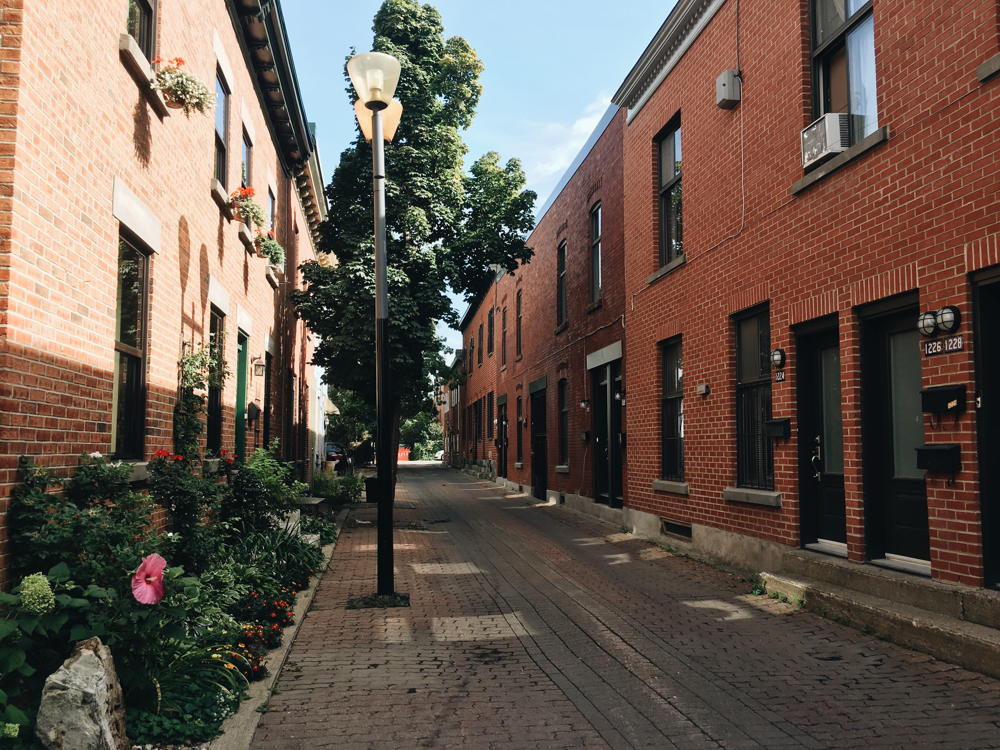
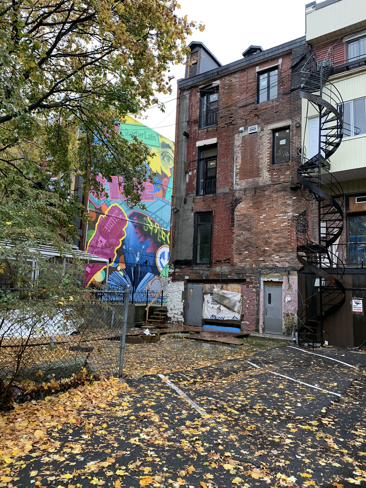

Over the last few years, our short-term rental (STR) research has focused on quantitative spatial analysis, combining web-scraped data about STR listings with administrative data about housing markets and urban economies. While this has yielded important insights into the distribution and impacts of STR activity in different cities, it has also raised questions which can only be answered through in-person conversations with hosts and other actors in the short-term rental market.
This summer, we initiated several lines of research collectively dubbed “the landlords projects” to answer some of these questions. In July, we undertook what we believe to be the first attempt by academic researchers to interview STR hosts in a controlled and systematic way. We interviewed over 20 hosts in Montréal, and interviews are still ongoing. The goals of the interviews, which will inform research articles in progress, include:
Understanding the motivations behind operating a short-term rental business, especially at a commercial scale, and how legal and regulatory factors impact decision-making;
Understanding the “ecosystem” surrounding commercial-scale short-term rentals, especially the reliance of these hosts on peripheral services such as cleaners, interior designers, and property managers;
Classifying Airbnb hosts as landlords, hoteliers, homesharers, etc. and understanding how these categories relate to each other.
While we are still in the midst of interviewing hosts and analyzing the responses, some recurring themes have begun to emerge. This is the first a series of blog posts that present these themes, with anonymized quotations from our interviews with STR operators at various scales. Some operate a single unit and some operate close to 100. This first piece explores the common motivations of Airbnb operators in Montréal.
Credit: Charlotte Belot
Many hosts have noted that they love being able to talk to people from all over the world, and that it feels rewarding to provide such a vital service to their guests. Many also noted the sense of responsibility they feel as representatives of the city, often being in a position to influence their guests’ first impressions of Montréal.
“Maybe it’s my personality too. I like to meet people. I help plan their vacations.”
“We’re very active with our guests. […] People are visiting the city, and we can be the determining factor that they hate Montréal.”
Subject 1: You know, the core business model of Airbnb is to be very friendly with your guests, so we try to be involved as much as possible. Subject 2: And I think […] something that I’ve never lost […] is interaction, meeting people, and always having new tourists. And I think that it’s very important. […] It’s being as involved as the guest wants you to be kind of thing. But also being there, whatever they need, and I think that’s what– Subject 1: It’s an interesting model, but it’s also, you know, you have to have a love for hospitality.
“At the end of the day, really for us it’s creating experiences unique and different. And really making somebody’s stay. To say, ‘Oh when I come back to Montréal, I want to stay with these guys.’ Then we’ve done the job right. Which is what it is for me.”
Hosts and commercial operators also comment on the downsides of large hotels: they are usually located in downtown, tourism-heavy, “inauthentic” areas, leaving guests dependent on high-cost restaurants and services that can lack the local flavour of the place they want to experience. STRs give travellers, especially families, a better-value accommodation option that almost always includes a kitchen and separate bedrooms for more independence and flexibility. In addition, according to our respondents, staying in STRs allows people to live more authentically like locals (or how they imagine locals) as opposed to staying in more generic hotels. Hosts frequently made these points in the context of discussing their own travel as guests.
“I rented an Airbnb because I have four kids. I can’t fit more than four people in a hotel room. So I always end up having to rent two rooms. That becomes really expensive. And then you’ve got six people just going for breakfast. Whereas if you have an Airbnb you have a kitchen, you can make breakfast, make a couple sandwiches, go to the beach. […] It allows you to actually a little bit feel like a local when you’re going somewhere and you’re not in the sort of aseptic hotel.”
“We go to Toronto all the time. Stay at the Royal York–I mean, what type of experience are you going to be getting about the city? You’re not. And when you leave the doors of the hotel that you’re staying in, you don’t experience the culture of the city either, or the neighbourhoods or everything else.”
“I want to be in the community. I want to shop locally. I want to see what it is that people look, and see, really the only way you can get immersed in their culture. […] Traveling, I mean for us, is also cooking. Getting the local ingredients and cooking yourself a meal. And also not spending $22 on breakfast.”
“Hotels are great, I love hotels, I love the amenities of hotels. But as a mother, as a family who travels with another family every year, the hotels never provide what I need to be comfortable for more than two or three days. I need to be able to cook. I need to prepare breakfast. I need to be able to do a load of laundry. Things happen. I want to be comfortable, especially if I’m spending money to stay somewhere else. A hotel is great when I was single or before I had a kid. With a kid, I need a full bedroom. I just went on vacation this winter, and it was the first non-apartment rental that we did with our child. Getting that kid to sleep in a room that wasn’t closed off was a nightmare. So I could only imagine everybody else, you won’t have a good time.”
“I like to not be downtown. I like to walk to markets and I like to take public transport and not have to be confined to a hotel room and go down to a lobby and then have the option of a shitty restaurant for breakfast or a stupid buffet that’s got stale croissants.”
The large, venture-capital-backed STR commercial operator Sonder uses this same messaging in communicating their concept: “What if there was a place as reliable as a hotel, but with all the warmth and character of a home? That’s why we founded Sonder — because you shouldn’t have to choose between great service and an authentic travel experience.” (sonder.com)
Credit: Charlotte Belot
Subjects consistently alluded to their ability to make significantly more money through STR rental platforms than they would have if they operated their units as traditional long-term rentals. While operators identified seasonal fluctuation of revenue as a potential difficulty, they still widely understood STRs as more profitable overall.
“If I was renting it traditionally I’d be looking at about $36,000 a year, roughly. […] In Airbnb I’m making 65 [thousand].”
“I really didn’t know how much I would make. I would be happy if I would have made exactly what I was going to make with long term. It has nothing to do that I was going to make more money at that time, because I really didn’t know what the market could sustain.”
“But my [two] apartments … let’s say, again for the sake of throwing numbers around, I’m getting $2,000 a month [each] in rent for them. [Name redacted]’s going to come, she’s offering me $2,500 in rent. That’s an extra $1,000 that they didn’t have before, to pay that mortgage of $1.5 million.”
One host who manages short-term rentals for apartment-building owners confirmed this:
Subject: It’s good for them, because they can see a lot more revenue. For sure. Researcher: So they would be making more by doing this than they would if they were just leasing to a tenant? Subject: Yeah.
One landlord noted that, even during the slowest winter months, they usually make enough money to match the potential long-term rents they would receive.
“Well I mean there are periods which are much more quiet. October, November, then December as you’re getting closer to the holidays, it ramps up again. Beginning of January then it drops again. And by April it’s in full swing. So it’s seasonal, but it’s from April until end of September. So it’s a good chunk of the year. […] And then even in the winter you get a couple of reservations, it comes close to what the rent would’ve been if it was long term. So financially there’s absolutely no downside other than the fact that it comes sort of as a chunk in the summer, and then it tapers off in the winter.”
As much as the seasonality of Airbnb revenue poses difficulties for its operators, it potentially raises much more serious questions for neighbourhood economies. If long-term residents are progressively pushed out of desirable neighbourhoods and replaced by seasonal tourist traffic, what does that mean for local businesses that depend on a year-long revenue stream?
Based on Montréal interviews, there is a clear trend of landlords being frustrated by the protections afforded to tenants and turning to the short-term market instead. For example, when a unit is an STR, landlords have more access to the dwelling to clean and make repairs, and enjoy a lack of governmental control over the rates they charge.
“Until this province wakes up and stops with this ridiculous ‘all rights go to the tenants’ routine, I’m trying to get out of doing any sort of traditional rentals.”
“I don’t think it’s Airbnb that this city’s going to have to be concerned about. I think it’s going to have to be concerned about the fact that people no longer want to be landlords.”
“Quite frankly, the Regie and the laws scare us. So we’ve had experiences, our friends have had experiences with tenants that they could not get rid of. I work downstairs, and getting into an altercation with tenants who were rolling around or who were playing loud music or had a grow-op… Actually, that’s happened a lot with our friends in the past. And there’s no recourse. And given the fact that […] I work downstairs, I’m here all the time, that was not an option. So from the get-go, we were looking for something different.”
“… more and more, the Regie has been making it difficult for landlords to do whatever they need to do on their own property, because of tenants. […] So, for example, when I first bought the place, I had no intention of getting rid of my tenants, because they were helping me pay my mortgage. But what happened was, the moment I said to them, ‘Look, I want to do some renovation in your place.’ […] What was happening was that they would take me to the Regie, and the Regie would, of course… Look. It’s a known fact that when a landlord goes in with a tenant, 90% of the time, the tenant walks out getting what they want. Not the landlord. Even if the landlord is in the right. It’s become a known thing now. So people are like, ‘What’s the point?’”
“The city has made it too complicated to rent out, you know? Gone are the days where the tenant and the landlord hashed it out between themselves. There’s too many regulations in place and whatever.”
“I know that people blame Airbnb but there is a long history of how housing has skyrocketed in the Plateau and it begins with the new imbalanced Regie board, imbalanced in the favour of the tenant.”
“So I guess that I definitely agree that it’s causing a major housing problem but it’s a housing problem that [is the cherry on top of the cake] and the cake was an imbalanced landlord-to-renter situation that existed for decades for a variety of reasons. […] And that created a situation where people were doing first condos, then cottages, and now it’s Airbnb [to get around dealing with the Regie].”
While there is surely some truth to this, STRs are hugely prevalent in many large cities without such strongly upheld tenant protections. Perhaps, in the case of Montréal, hosts’ motivations are often different, but the end result is likely the same. If tenants’ rights were protected to a lesser extent, similar to Toronto or Vancouver, there is nothing to suggest that the number of STRs would be lower. In future, it could be interesting to study in a systematic way how hosts’ motivations vary across municipal or provincial regulatory environments.
More than anything, the results of our interviews have illustrated the complexities of the short-term rental landscape in Montréal. The above themes shouldn’t be conflated with sweeping statements true of all hosts, but rather recurring comments and perspectives from the twenty-odd conversations we’ve had so far that should be kept in mind as we continue with our research.
Other trends in the responses so far include the importance of cleaners and cleaning services (used by all but the smallest-scale operators), the recent proliferation of keyless locks, which facilitate check-ins, and the frequent use of full-time property managers or co-hosts. Additionally, almost all hosts cross-list their properties on multiple sites, such as booking.com, TripAdvisor, and Expedia, in addition to Airbnb.
Motivations vary, but fall into a few categories: frustrated landlords looking to move away from traditional rentals, people with a background in and/or passion for the tourism industry, people with one or two listings using Airbnb to generate additional income, some of whom are affluent and looking for investment income, and some who use the income to be able to afford their basic living costs. Of course, sometimes hosts fit into more than one category.
Of course, the motivations of individuals to list properties full-time on Airbnb is closely linked to their perceptions of the local market and regulatory landscape. Stay tuned for a future post discussing some of the common perceptions and contradictions among Montréal’s commercial operators.